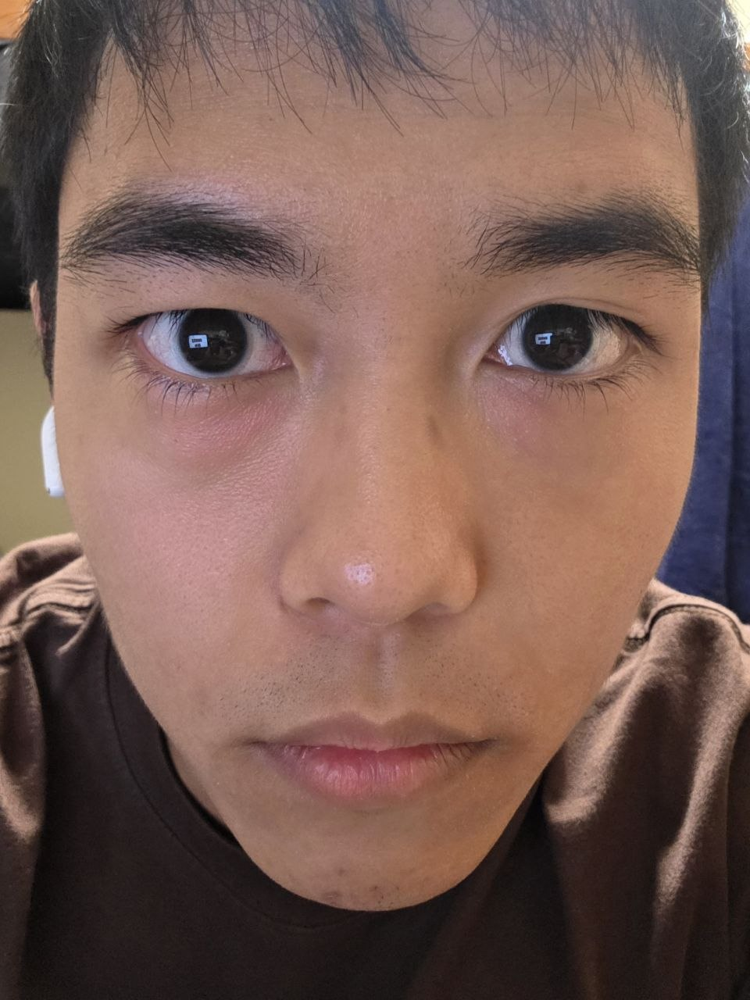
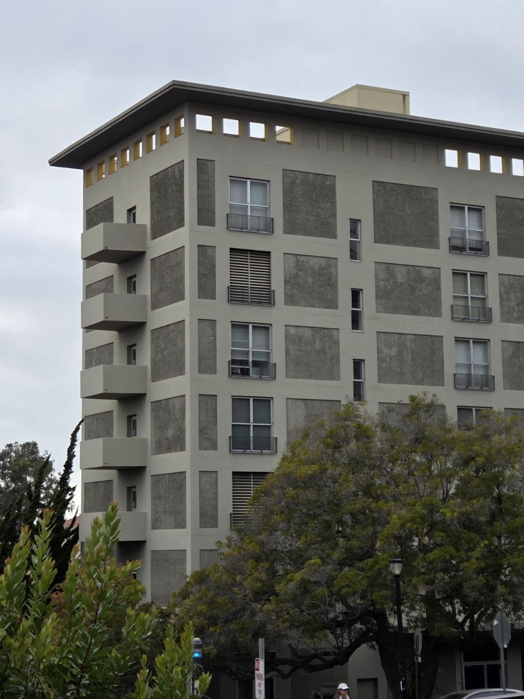
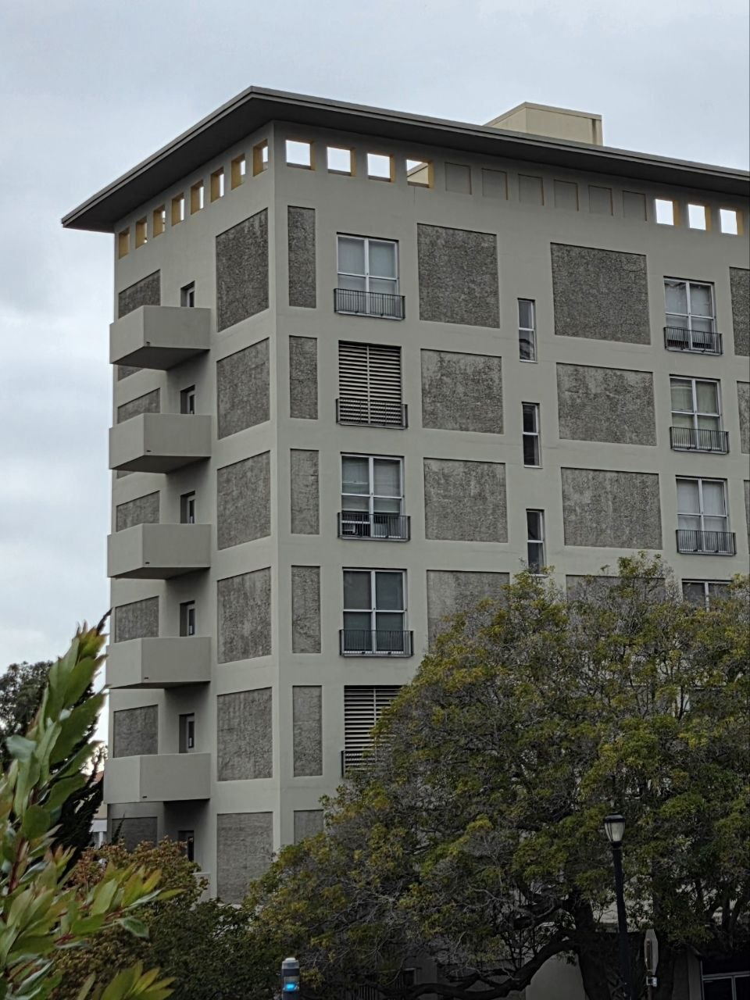

Becoming Friends
with Your Camera
Three experiments in how camera position changes perspective and zoom changes framing.
Distance changes a portrait
I first photographed my face from close up without zoom. I then moved farther away and used zoom to keep my face roughly the same size in the frame.


At close range, the depth from the nose to the sides of the head is a relatively large fraction of the total camera distance. The nearest features are magnified more strongly. Moving back reduces that difference in relative distance. Zoom restores the framing, while the new viewpoint produces the change in perspective.
Camera distance matters even when the face occupies a similar area in both images. Changing zoom without moving the camera would mainly change the crop and magnification.
Perspective in architecture
For the building, I started farther away with zoom, then moved closer and photographed it without zoom. The framing is similar, allowing the perspective differences to be compared.


From farther away, differences in depth occupy a smaller fraction of the viewing distance. This makes the building appear flatter. From closer up, the near corner has a stronger size advantage over the farther wall. Foreground plants also change position relative to the building because of parallax.
The effect is modest in this pair, and the framing and camera angle are not identical. The photographs still illustrate why the compressed appearance associated with telephoto images comes from the more distant viewpoint used to obtain the same framing.
The dolly zoom
I changed camera distance and zoom together while keeping the stuffed animal roughly the same size. As the viewpoint moves back and zoom increases, the background shelf and objects grow relative to the subject.

The webpage contains an animated dolly zoom. The four original views below show the same sequence in this printed report.


Moving the camera changes the relative distances to the subject and background. Increasing zoom compensates for the subject’s reduced image size, but it cannot compensate for objects at every depth at once. The subject stays approximately constant while the background changes scale.
There is some framing drift between these views. The important visible change is the background’s size relative to the animal, rather than a perfectly fixed outline of the foreground subject.